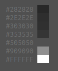

2025.33
Menu
We have a menu! It is generated by teallach-menu, which coverts a human-readable menu format (example below) into openbox compliant XML.
item Browser firefox
item Terminal foot
item Tweaks labwc-tweaks
sepr
exec labwc-menu-generator -b -t foot
sepr
menu Preferences
item "Edit rc.xml" "featherpad ~/.config/labwc/rc.xml"
item "Edit autostart" "featherpad ~/.config/labwc/autostart"
menu Exit
conf Reconfigure
exit LogoutPalette
I think this palette looks good. It is not too dissimilar to that of CrunchBang and works fine with Adwaita Dark.

foot -o colors.background=505050
tl-view-palette ~/.local/share/themes/teallach/labwc/palette.txt2025.32
If we start with a bare Alpine Linux installation, how much glue is
needed to turn labwc into something that feels like a
Desktop Environment?
labwc is running on Alpine 3.22 with only the following
packages: doas, labwc,
ttf-dejavu, seatd,
mesa-dri-gallium, dbus, dbus-x11,
xwayland.